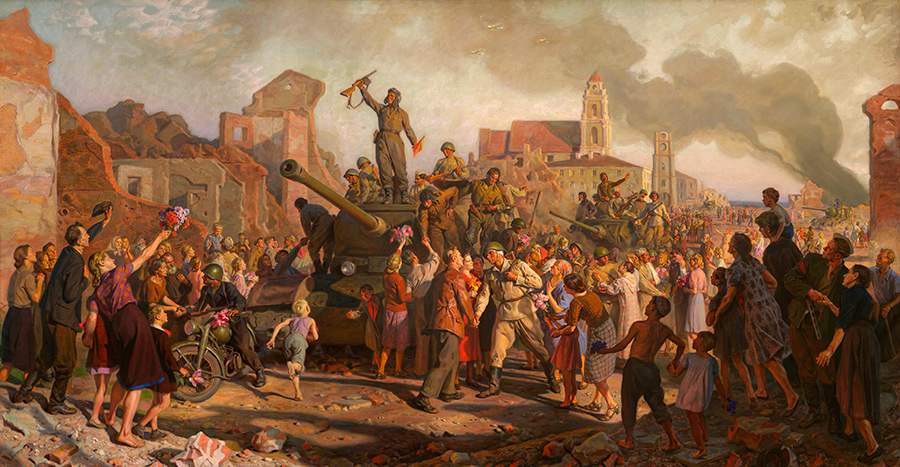
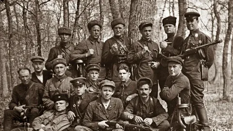
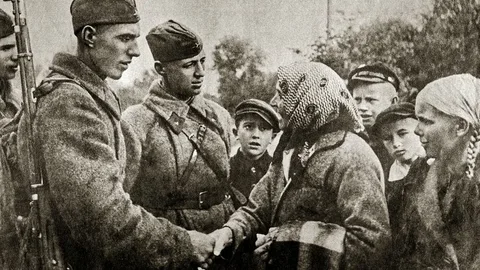
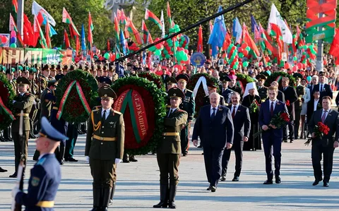
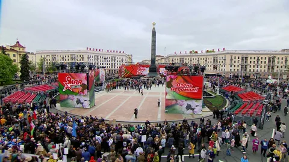
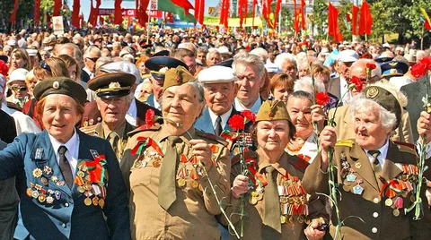
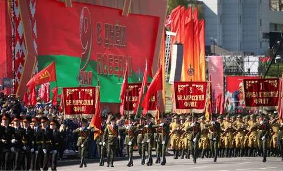
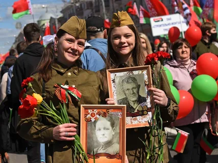
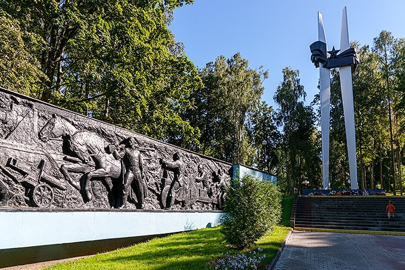
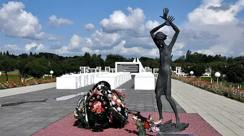

1945 - 2025
80 лет Победы
80 лет Победы — символ мужества, единства и несгибаемой воли белорусского народа, который прошёл через тяжелейшие испытания Великой Отечественной войны и внёс неоценимый вклад в Победу.
80
лет Победы
1945
год Победы
9
мая
Хронология победы
22 июня 1941
Начало войны
Нападение фашистской Германии на СССР. Начало оккупации Беларуси.
23 июня 1944
Операция «Багратион»
Начало крупнейшей наступательной операции по освобождению Беларуси.
3 июля 1944
Освобождение Минска
Столица Беларуси освобождена. День, который стал Днём Независимости.
9 мая 1945
День Победы
Окончание Великой Отечественной войны. Полная победа над фашизмом.
Герои освобождения

Советские войска
Героические солдаты и офицеры, освободившие белорусскую землю от захватчиков.
Миллионы участников

Партизаны
Народные мстители, которые сражались в тылу врага на протяжении всей оккупации.
Непокорённые

Мирные жители
Простые люди, которые помогали фронту, прятали раненых и верили в победу.
Единство народа
Галерея памяти







Цитаты и высказывания
"Никто не забыт, ничто не забыто"— Александр Лукашенко
"Мы помним, какой ценой завоёван мир, и никогда не забудем героев, подаривших нам свободу."— Из обращения к народу
"Память о войне — это не только прошлое, это наш долг перед будущими поколениями."— Завет потомкам